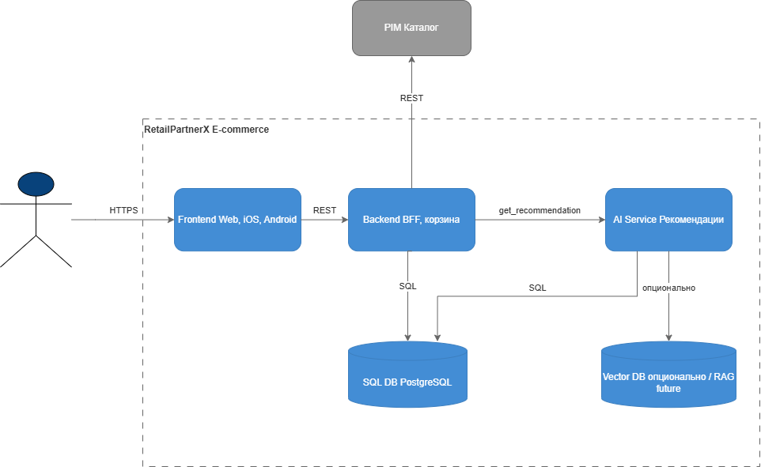
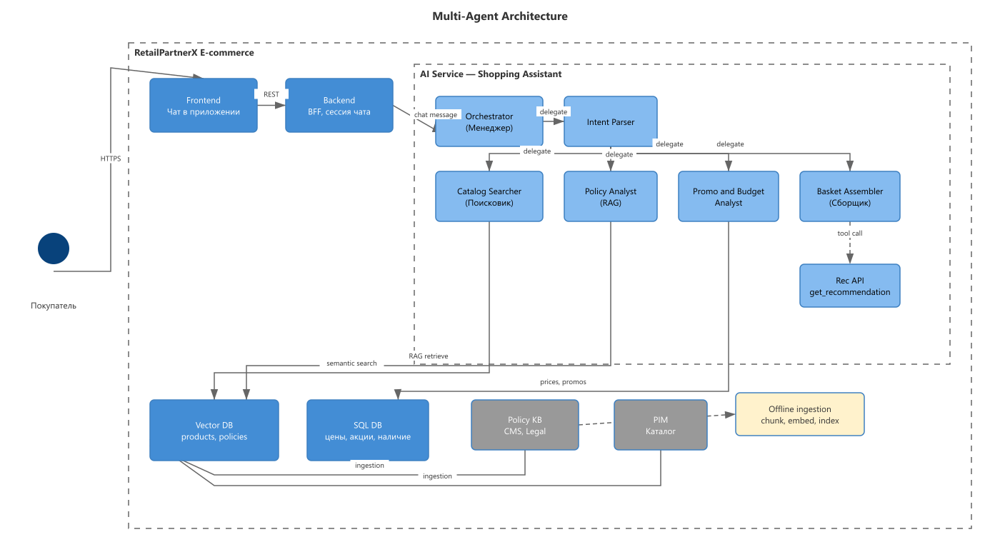
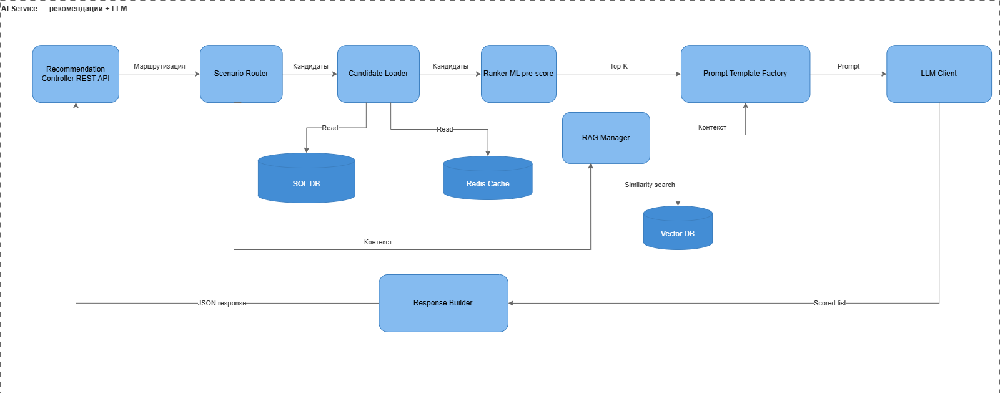
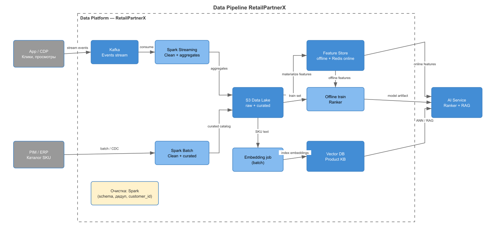
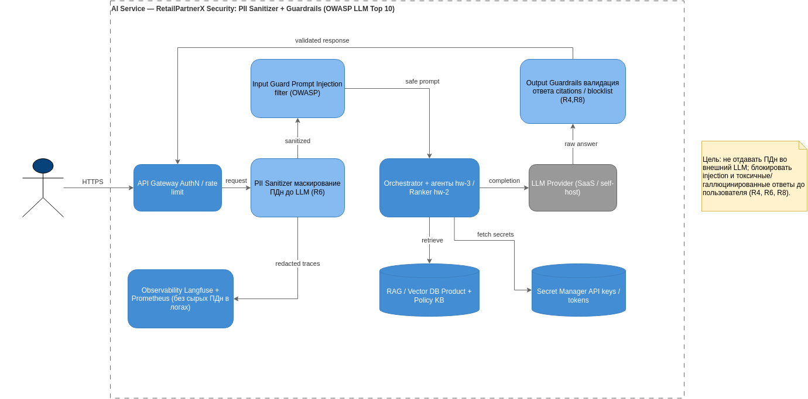
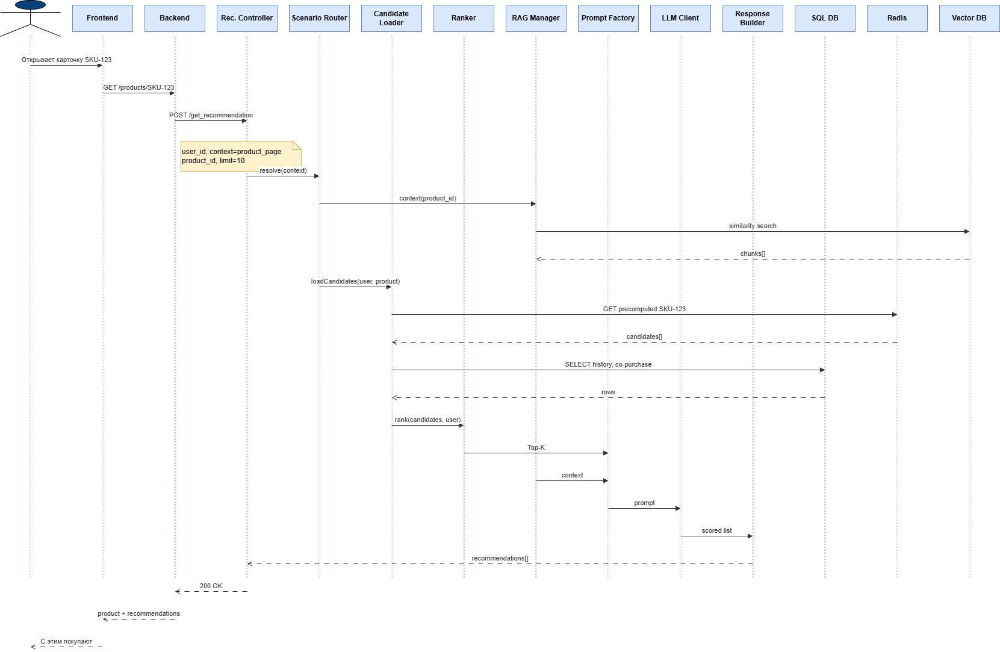

Что демонстрирует портфолио
AI-системы как распределённые программные системы: границы, data flows, integrations, trust boundaries, failure modes, evaluation и trade-offs — не только список технологий.
Архитектура AI-native системы для FMCG-ритейла: персонализированные рекомендации и shopping assistant в мобильном приложении
Executive Summary
FMCG-ритейлер RetailPartnerX хочет персональные рекомендации и conversational commerce, но требования размыты — нет KPI, границ данных и каналов. Кейс прорабатывает полный architecture lifecycle: от discovery и contract model до C4, agentic RAG, data pipeline и production-readiness design.
AI-системы как распределённые программные системы: границы, data flows, integrations, trust boundaries, failure modes, evaluation и trade-offs — не только список технологий.
C4 (C1–C3), Sequence, OpenAPI, multi-agent RAG, ADR LLM hosting, data pipeline, security/eval/observability — ~85% артефактов.
LangGraph stub: 6-agent flow, keyword RAG, policy deny, 7 pytest. Без API keys, без реального LLM и Vector DB.
Production deployment. Нет работающего Kafka, Spark, Pinecone, Prometheus, Ragas CI. Числовой SLO latency не фиксируется без замеров MVP.
Architecture Journey
Единый case study, последовательно развивающийся через учебные модули. Физические имена hw-* сохранены для процесса сдачи курса.
Architecture at a Glance
Две ключевые проекции: контейнерная архитектура recsys (hw-2) и agentic layer shopping assistant (hw-3).


POST /get_recommendation — Basket Assembler вызывает recsys API из hw-2Key Architecture Decisions
AI Architecture Capabilities
Статусы основаны на repository evidence. Не все capabilities реализованы — это честная карта maturity.
Production Readiness
AI Architecture — не только LLM API. Ниже — что учтено в design и какой статус у каждой области.
| Область | Статус | Что учтено | Evidence |
|---|---|---|---|
| Security | Architecture Design | PII Sanitizer, Input/Output Guardrails, Secret Manager, OWASP LLM mapping | QA §1 |
| Reliability | Studied + Design | OpenAPI 503, graceful degradation, cold start fallback в стратегии | OpenAPI, hw-1 |
| Evaluation | Planned | Faithfulness, Answer Relevancy; Ragas / DeepEval CI gates | QA §2 |
| Observability | Planned | Golden Signals + AI cost widgets; Prometheus, Tempo, Langfuse | QA §3 |
| Data | Architecture Design | Ingestion, Feature Store, anti-skew, index versioning, drift monitoring | data-pipeline.md |
| Platform | Not evidenced | Deployment, K8s, CI/CD — вне scope репозитория | — |
Enterprise / Retail Context
Архитектурные patterns кейса могут быть применены к типовым задачам FMCG / grocery retail — без привязки к конкретным production-системам.
Блок «С этим покупают» на карточке SKU с Ranker → Top-K → LLM re-rank и контролем latency-budget.
Conversational commerce: constraint parsing (аллергены, бюджет, акции), сборка корзины через recsys API.
RAG по internal policies (GDPR, 18+, аллергены) как semantic guard — Policy Analyst изолирован для audit.
Data pipeline для актуальности Product KB, embeddings и online features — связь Faithfulness с hw-5 freshness.
Supervisor multi-agent pattern применим к internal knowledge workflows с явными guardrails и evaluation.
Dual KB architecture (operational data + policy docs) — pattern для разделения retrieval-стратегий.
Evidence Map
| Модуль | Architecture focus | Key artifact | Link |
|---|---|---|---|
| hw-1 | Program, risks, roadmap | RetailPartnerX AI Strategy | Strategy |
| hw-2 | C4, Sequence, OpenAPI | C2/C3 diagrams + recommendation-api.yaml | Architecture README |
| hw-3 | Agentic RAG, prototype | agents.md, rag-pipeline.md, LangGraph code | graph.py |
| hw-4 | ADR LLM hosting | ADR-001 Accepted | ADR-001 |
| hw-5 | Data pipeline, Feature Store | data-pipeline diagram + doc | data-pipeline.md |
| hw-6 | Security, eval, observability | quality-assurance.md, security-layer | QA doc |




Author
Project Status
RetailPartnerX — учебный архитектурный кейс, развиваемый в рамках программы AI Architect.
Репозиторий содержит architecture design, прототип LangGraph (stub), эксперименты и coursework artifacts в hw-*.
Цель проекта — практическая проработка архитектуры AI-native систем и production-oriented trade-offs.
Проект не является production deployment.
{kind=link}
{kind=link}
{kind=link}
{kind=link}
{kind=link}